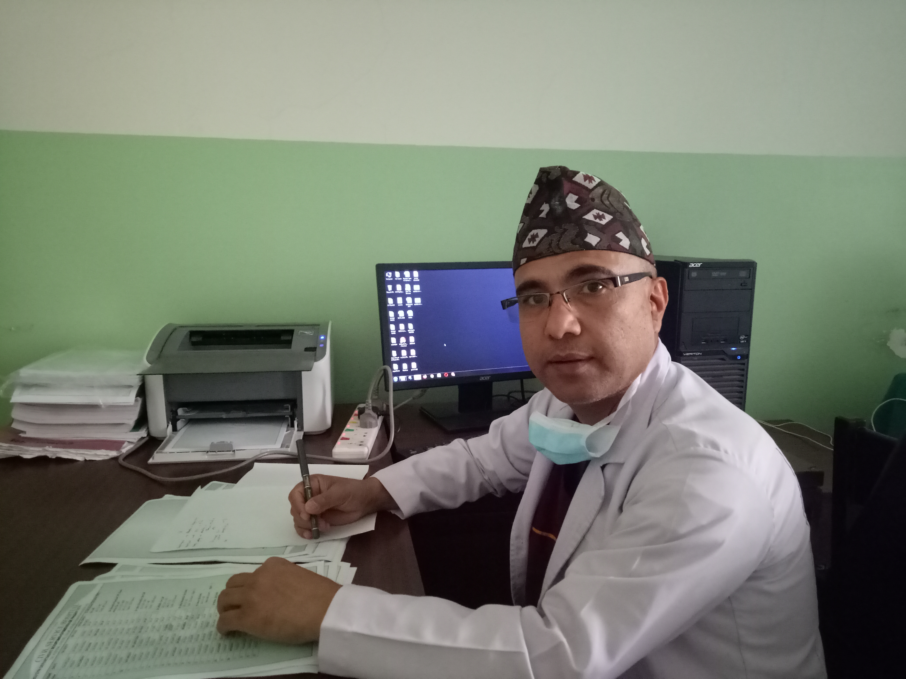

About
I am an Obstetrician and Gynecologist and have been practicing medicine since 2004. I have done MD in Obstetrics and Gynecology from Manipal Hospital Bangalore under Kathmandu University. I have served the most rural and remote areas of Nepal including Karnali province and many hilly as well as Terai districts of both eastern and western Nepal. I have done hundreds of different and difficult operations of various gynecology and obstetrics related diseases. I am currently working in Civil Service Hospital, Baneshwor Kathmandu as a Gynecologic cancer fellow. I have an interest in research and publications and have worked as an editor in chief of an academic journal of Karnali Academy of Health Sciences(JKAHS) in the past. Gynecologic cancer is a common problem of rural as well as urban Nepal. There are many cancer-related deaths in our country which could have been prevented.I realized this situation while working in different parts of the country and developed a special interest in the prevention and holistic treatment of female genital organ-related cancer. To fulfill my passion for gynecology, I am enrolled in a fellowship in Gynecologic Oncology under the International Gynecologic Cancer Society(IGCS) global curriculum program. Gynecologic cancer is a common problem of rural as well as urban Nepal.